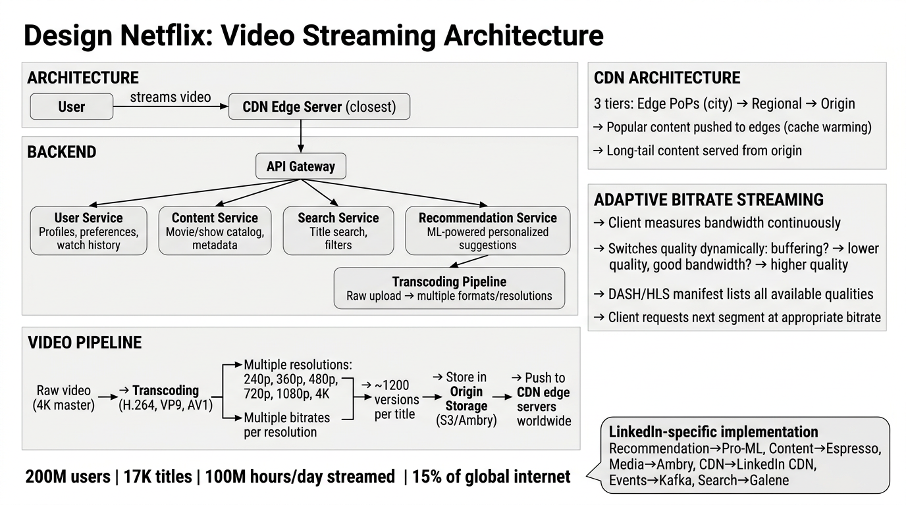

A complete deep dive into the architecture of the world's largest streaming platform — adaptive bitrate, transcoding pipeline, CDN, recommendations, and global scale.
Netflix is the world's leading subscription video-on-demand (SVOD) streaming platform. Unlike user-generated content platforms, Netflix controls the entire pipeline from studio ingestion to last-mile delivery, enabling deep optimization at every layer.
Netflix uses a microservices architecture running on AWS for the control plane (user management, recommendations, API gateway) and its own Open Connect CDN for the data plane (actual video delivery). This separation is fundamental to understanding the system.
| Service | Responsibility | Key Tech |
|---|---|---|
| User Service | Authentication, profiles, subscription management, viewing history | Cassandra, Memcached |
| Content Service | Catalog metadata, title info, availability by region, licensing | Cassandra, EVCache |
| Search Service | Full-text search across titles, actors, genres, descriptions | Elasticsearch |
| Recommendation Service | Personalized row generation, artwork selection, ranking | Spark, custom ML models |
| Streaming Service | Playback session management, manifest generation, DRM license serving | Zuul, custom playback APIs |
| Transcoding Pipeline | Offline encoding of source content into all delivery formats | Cosmos, Archer, custom encoders |

Unlike YouTube which transcodes at upload time, Netflix transcodes offline before content release. This allows much more compute-intensive encoding — a single title may take thousands of CPU-hours to encode but the result is higher quality per bit, reducing CDN bandwidth costs.
| Codec | Use Case | Compression Efficiency |
|---|---|---|
| H.264 (AVC) | Legacy devices, broadest compatibility | Baseline |
| H.265 (HEVC) | 4K HDR content, smart TVs, mobile | ~40% better than H.264 |
| VP9 | Chrome, Android, royalty-free option | ~35% better than H.264 |
| AV1 | Next-gen, highest efficiency, growing support | ~50% better than H.264 |
Raw content (mezzanine files, often ProRes or JPEG2000) arrives from studios or Netflix production. Files can be 100+ GB for a single episode in 4K HDR.
VMAF (Video Multi-Method Assessment Fusion) — Netflix's own perceptual quality metric — analyzes each shot to determine optimal encoding parameters. This drives the per-shot bitrate ladder.
Content is split into chunks and distributed across a massive compute cluster. Each chunk is encoded independently into every combination of codec, resolution, and bitrate.
Encoded chunks are reassembled. Subtitles, multiple audio tracks, and DRM encryption (Widevine, FairPlay, PlayReady) are muxed into final packages.
Raw Upload (Studio/Production) ↓ Quality Analysis (VMAF per-shot) ↓ Parallel Transcoding → H.264, VP9, H.265, AV1 ↓ × 240p, 360p, 480p, 720p, 1080p, 4K ↓ × 10-15 bitrate rungs each ↓ DRM Encryption + Subtitle/Audio Muxing ↓ ~1,200 versions per title ↓ Origin Storage (AWS S3) ↓ CDN Push → Open Connect Appliances worldwide
Adaptive Bitrate (ABR) streaming is the technique that lets Netflix adjust video quality in real time based on network conditions, device capability, and user plan. The goal: maximize perceived quality while minimizing rebuffering.
When a user presses Play, the Streaming Service returns a manifest file (MPD for DASH, M3U8 for HLS). This manifest lists all available streams — every combination of codec, resolution, and bitrate — along with URLs for each 2-4 second video segment.
<!-- Simplified DASH MPD manifest -->
<MPD type="dynamic">
<Period>
<AdaptationSet mimeType="video/mp4" codecs="avc1.640028">
<Representation bandwidth="235000" width="320" height="240" />
<Representation bandwidth="560000" width="640" height="360" />
<Representation bandwidth="1050000" width="854" height="480" />
<Representation bandwidth="2100000" width="1280" height="720" />
<Representation bandwidth="4200000" width="1920" height="1080"/>
<Representation bandwidth="8000000" width="3840" height="2160"/>
</AdaptationSet>
<AdaptationSet mimeType="audio/mp4" codecs="mp4a.40.2">
<Representation bandwidth="128000" />
</AdaptationSet>
</Period>
</MPD>
Netflix's ABR algorithm is more sophisticated than simple throughput-based switching. It considers multiple signals:
| Signal | What It Measures | Impact on Decision |
|---|---|---|
| Throughput History | Download speed of recent segments | Primary signal for sustainable bitrate selection |
| Buffer Level | Seconds of video buffered ahead of playhead | If buffer is low, aggressively drop quality to avoid stall |
| Device Capability | Screen resolution, decoder support, DRM tier | No point sending 4K to a 720p phone screen |
| User Plan | Basic (720p), Standard (1080p), Premium (4K) | Hard cap on max resolution per subscription tier |
| ISP History | Historical throughput from this ISP/region | Initial bitrate selection before measurements exist |
Netflix operates one of the largest CDNs in the world: Open Connect. Unlike traditional CDNs (Akamai, CloudFront), Netflix owns and operates its own hardware, deployed directly inside ISP networks, eliminating transit costs and reducing latency to a single network hop for most users.
| Tier | Location | Content | Cache Hit Rate |
|---|---|---|---|
| Tier 1: Edge PoPs | Inside ISP data centers (Open Connect Appliances) | Popular content for that region/ISP, pre-warmed nightly | ~95% of requests |
| Tier 2: Regional Hubs | Major IXPs (Internet Exchange Points) | Broader catalog, serves cache misses from Tier 1 | ~4% of requests |
| Tier 3: Origin | AWS S3 in US regions | Complete catalog, all encoded versions | ~1% of requests |
Every night during off-peak hours, the Open Connect control plane analyzes viewing patterns and pre-populates edge caches with content predicted to be popular the next day. New releases are pushed to all edges before the launch time. This means most content is served from the closest possible server with zero origin fetches.
Recommendations drive 80% of content watched on Netflix. The homepage is not a static catalog — it's a fully personalized storefront where every row, every title position, and even every thumbnail image is selected by ML models specific to each user.
"Users who watched X also watched Y." Finds patterns across the entire user base. Works well when there is lots of viewing history but fails for new users or new content.
"Because this title has attributes similar to what you like." Uses metadata: genre, actors, director, tags, mood, pacing. Works for new content but can create filter bubbles.
Netflix runs hundreds of concurrent A/B tests. For recommendations, they use interleaving — a technique where results from two ranking models are interleaved in a single page, and user engagement determines the winner. This requires 10-100x fewer users than traditional A/B splits.
LinkedIn Parallel LinkedIn uses LIX for feature flagging and A/B testing across Feed ranking, Job recommendations, and Ads targeting — same concept of controlled experimentation at scale.
| Signal Type | Examples | Weight |
|---|---|---|
| Explicit | Thumbs up/down, "My List" additions | High but sparse |
| Implicit | Watch duration, completion %, rewatch, time of day | Primary signal (abundant) |
| Contextual | Device type, day of week, recent viewing session | Modulates ranking |
| Social | Trending in your country, popular with similar profiles | Discovery boost |
| Netflix Component | LinkedIn Equivalent | Notes |
|---|---|---|
| Recommendation Engine | Pro-ML | LinkedIn's ML platform for Feed ranking, job recs, people-you-may-know; same candidate-gen → ranking → re-ranking pipeline |
| Cassandra (user/content data) | Espresso | LinkedIn's NoSQL document store; serves profile, messaging, and entity data at low latency |
| S3 (origin blob storage) | Ambry | LinkedIn's distributed blob store for images, videos, documents, and large objects |
| Open Connect CDN | LinkedIn CDN | LinkedIn uses a combination of internal PoPs and third-party CDNs (Akamai) for static assets and media delivery |
| Kafka (event streaming) | Kafka | LinkedIn created Kafka; it remains the backbone for activity tracking, change data capture, and async processing |
| Elasticsearch (search) | Galene | LinkedIn's custom search engine; powers People Search, Job Search, Content Search with graph-aware ranking |
| Zuul API Gateway | LiX + Rest.li | LinkedIn uses Rest.li for service APIs and LiX for dynamic feature control at the gateway layer |
| Chaos Monkey (resilience) | LinkedOut | LinkedIn's own chaos engineering framework for fault injection and resilience validation |
Answer: Use a multi-pronged approach: (1) onboarding quiz asking for genre/title preferences, (2) popularity-based recommendations as a fallback, (3) demographic-based priors (country, language, sign-up device), (4) contextual bandits that explore-exploit to learn preferences quickly. The key insight is that even a few signals (3-5 title ratings) dramatically improve recommendation quality.
Answer: Multiple layers: (1) ABR algorithm aggressively adapts quality to prevent buffer underrun, (2) predictive buffer management starts at lower quality for fast initial fill, (3) CDN placement inside ISP networks reduces latency to single-hop, (4) per-shot encoding optimizes bitrate so the same quality requires fewer bytes, (5) client pre-fetches the next episode's initial segments before the current one ends.
Answer: Content is encrypted at rest (AES-128 or AES-256) during the transcoding pipeline. The manifest contains key IDs. When the client needs to decrypt, it contacts a license server (separate from the CDN) to obtain a decryption key. The license server validates the user's subscription, device trust level, and entitlements. Different DRM systems serve different platforms: Widevine (Android/Chrome), FairPlay (Apple), PlayReady (Windows/Xbox). The encrypted content itself is identical across DRM systems — only the key-wrapping differs (CENC standard).
Answer: Key principles: (1) Push, don't pull — proactively fill edge caches during off-peak rather than waiting for cache misses, (2) Embed in ISPs — deploy hardware inside ISP networks to eliminate transit hops, (3) DNS-based steering — route clients to the optimal server considering load, health, and latency, (4) Tiered architecture — Edge → Regional → Origin with 95%+ hit rate at the edge, (5) Catalog-aware caching — use viewing prediction models to decide what to cache where, not just LRU.
Answer: (1) Pre-warm all edge caches with the new content days before launch, (2) over-provision CDN capacity in predicted hot regions, (3) use progressive rollout by timezone to spread the load wave, (4) the ABR algorithm naturally handles congestion by downgrading quality gracefully, (5) separate the control plane (can degrade recommendations) from data plane (must keep streaming) so a metadata service failure doesn't stop playback.